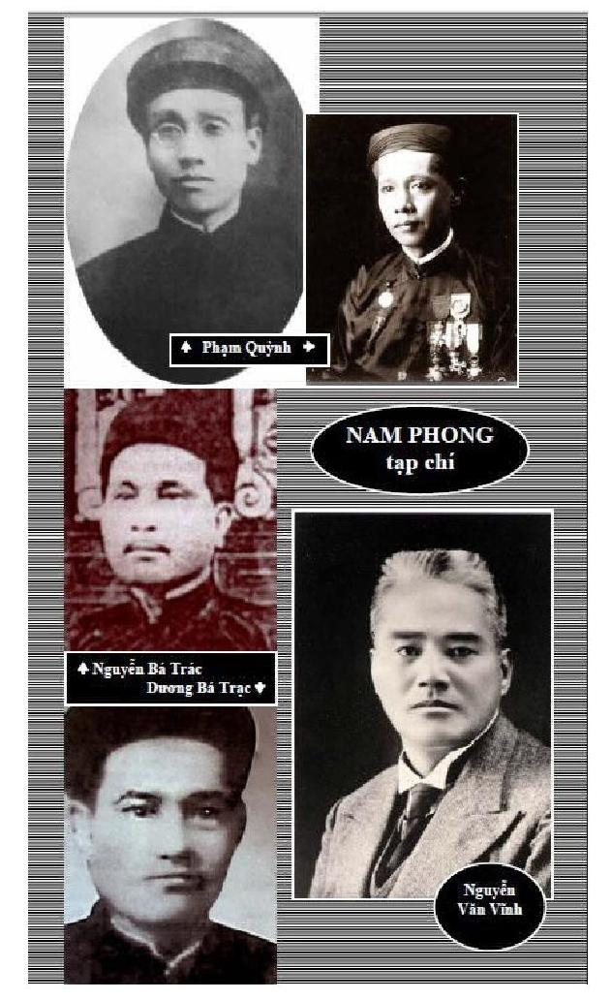

Chương 22


uy không chính thức có vụ án Nam Phong, nhưng sau khi Phạm Quỳnh và Nguyễn Bá Trác, chủ nhiệm và chủ bút Nam Phong bị xử tử năm 1945; tại miền Bắc, toàn bộ trước tác trên Nam Phong, được coi là tờ báo của thực dân do "trùm mật thám" Louis Marty điều khiển, bị khai trừ khỏi nền giáo dục và văn học. Tại miền Nam từ 1954 đến 1975, các nhà nghiên cứu như Thanh Lãng, Phạm Thế Ngũ... tuy có nhắc đến nguồn cội phát xuất Nam Phong, từ chính quyền thực dân, nhưng vẫn xác nhận giá trị Phạm Quỳnh và đưa Nam Phong vào chương trình giáo dục trung-đại học. Sự kết án Phạm Quỳnh của Nguyễn Văn Trung, chỉ là một hình thức phản phê bình, chống lại quan điểm Thanh Lãng và Phạm Thế Ngũ, nhưng không đủ bằng chứng thuyết phục.
Cái án vô hình về Nam Phong vẫn còn đó, chưa ai minh giải. Xoá án Nam Phong là tìm lại công lao của những người đã xây dựng nền văn học quốc ngữ, đã bị chôn vùi trong 66 năm ở miền Bắc, 36 năm trên toàn quốc: Học trò không được học, không được biết, không được sử dụng những thành tựu vô giá về dịch thuật và tư tưởng mà Nam Phong để lại. Tên Phạm Quỳnh và Nam Phong hiện nay đã được đưa vào Từ điển Bách khoa và Từ điển Văn học, bộ mới, nhưng tên Nguyễn Bá Trác bị loại. Sự đánh Nam Phong dựa trên hai yếu tố chính:
1- Chuyện Rồng Nam phun bạc mà chúng tôi đã đề cập trong chương trước.
2- Báo Nam Phong do Louis Marty sáng lập.
Ở điểm thứ 2 này, lời vu cáo của Phùng Bảo Thạch:
"Phan Khôi đã được Mác-ty (Marty) gọi ra làm việc cạnh nó và viết báo Nam Phong. Trong phòng kín, Phan đã bí mật tố giác một số nhân sĩ yêu nước và bí mật hiến mưu dập tắt phong trào cách mạng"897 được Lược truyện các tác gia Việt Nam chép lại, đã có ảnh hưởng lâu dài trong sự tàn phá uy tín của Phan Khôi.
Nguyễn Công Hoan phụ hoạ: "Làm chỉ điểm cho Pháp, cố nhiên Phan Khôi được sở mật thám Pháp tin dùng. Báo Nam Phong của tên chùm (trùm) mật thám Đông dương Lu-y Mác-ty sáng lập, cho hai tên phản cách mạng phụ trách, Phạm Quỳnh làm chủ bút phần quốc văn, Nguyễn Bá Trác làm chủ bút phần Hán văn. Nguyễn Bá Trác được lệnh của Mác Ty dùng Phan Khôi.
Từ đó, đời Phan Khôi xoay ra làm báo để reo rắc những tư tưởng phản động, có lợi cho thực dân hơn nghề làm chỉ điểm cho chúng"898.
Những lời vu hãm trên đây tiêu biểu cho lối buộc tội Nam Phong, được dùng để đánh Phạm Quỳnh, Nguyễn Bá Trác, Lê Dư, nhưng đặc biệt với Phan Khôi, sự xuyên tạc đã đạt đến đỉnh cao. Lập luận xoáy vào 3 điểm chính:
- Báo Nam Phong được Pháp bảo trợ.
- Nam Phong do Louis Marty, Nguyễn Bá Trác và Phạm Quỳnh điều hành.
- Phan Khôi, "vốn nghề chỉ điểm" nên được Marty tin dùng.
● Louis Marty
Không chỉ Nam Phong mà hầu hết các báo quốc ngữ, từ khởi thủy đều do người Pháp sáng lập899: Gia Định báo,1865: Ernest Potteaux sáng lập-Trương Vĩnh Ký chủ bút. Nông cổ mín đàm, 1901: Canavaggio - Lương Khắc Ninh. Đại Việt tân báo, 1905: Ernest Babut - Đào Nguyên Phổ. Lục tỉnh Tân văn, 1909: Pierre Jeantet - Trần Nhất Thăng. Đăng cổ tùng báo, 1907-1908 và Đông Dương tạp chí, 1913: Schneider - Nguyễn Văn Vĩnh... Vậy việc Nam Phong do Marty - Phạm Quỳnh và Nguyễn Bá Trác, trách nhiệm, nằm trong quy luật trên và trong chủ trương của chính quyền thuộc địa lúc bấy giờ: thúc đẩy trí thức hoạt động văn hoá để họ không chống đối chính quyền. Việc người trí thức lợi dụng lại khí giới này để truyền bá quốc ngữ và văn hoá Tây phương, là mặt trái của mề đai.
Trường hợp Nam Phong, dính liền với Louis Marty, người được coi là "trùm mật thám", vậy cần tìm hiểu xem Louis Marty là ai?
Vũ Ngọc Phan trong Nhà văn hiện đại, chỉ ghi vỏn vẹn: Marty là một ông quan cai trị Pháp. Phạm Thế Ngũ cho biết thêm: 1907, Marty vào ngạch tham sự hành chánh, làm việc tại Phủ Thống Sứ Bắc Kỳ. 1914, làm phụ tá trưởng Phòng Chính Trị Phủ Toàn Quyền, được đặc phái đi Bắc Kinh. 1915, thăng trưởng phòng Chính Trị, phụ trách việc lấy tin để đối phó với âm mưu tấn công vào Đông Dương của Đức. Cơ quan gián điệp ấy sau trở thành Tổng Cục An Ninh Đông Dương. 1934, Marty bị toàn quyền Robin đẩy đi làm khâm sứ Ai Lao900.
Hoàng Văn Chí viết: "Mai (Đặng Thai Mai) và Giáp (Võ Nguyên Giáp) đều là "con nuôi" của Louis Marty, giám đốc phòng chính trị của phủ toàn quyền. Marty kiếm việc cho Mai dạy học ở trường Gia Long mà giám đốc là Bailey, một người Pháp, và giao Giáp, hãy còn là sinh viên, cho Mai trông coi. Trong khi những đảng viên Tân Việt khác bị tù đày hoặc cầm cố thì hai người ung dung sống ở Hà Nội cho đến ngày Giáp được Pháp đưa sang Tầu theo Việt Minh chống Nhật. Giáp có theo học lớp "chiến tranh du kích" do Mỹ mở ở Tĩnh Tây, nhưng không bao giờ lên Diên An"901.
Đặng Thai Mai viết trong hồi ký: "Tôi tham gia đảng Phục Việt, tiền thân của đảng Tân Việt (...) Khoảng 1928, tôi vào dạy trường Quốc học Huế. Ở đây tin tức không có bao nhiêu. Năm 1930-1931 tôi bị tù. Năm 1932 tôi ra Hà Nội dạy học trường Gia Long, sau dạy ở trường Thăng Long. (...) Ở trường Thăng Long lúc đó có đồng chí Phan Thanh902 Võ Nguyên Giáp và tôi. Tôi được giao một vài công tác góp phần vào việc mở Hội truyền bá quốc ngữ, viết báo đảng bằng quốc ngữ và tiếng Pháp"903.
Nguyễn Vỹ, trong Tuấn chàng trai nước Việt904, viết: "Võ Nguyên Giáp, sinh viên cao đẳng luật khoa, Hà Nội, vừa thi đỗ chứng chỉ 2, cấp bằng cử nhân Luật, tháng 6 năm 1937. Nhưng năm sau, 1938, anh lại thi rớt cấp bằng Luật pháp Hành chánh. Số đông sinh viên Luật Hà nội thi đậu chứng chỉ cử nhân Luật liền học một năm về "Droit administratif (Hành chánh Luật), thi đậu cấp bằng này được bổ ra làm Tri huyện, theo Hành Chánh Nam triều, hoặc "commis"905 làm tại phủ toàn quyền, hoặc các toà Thống sứ, Khâm sứ, Thống Đốc, nếu phục vụ cho chính quyền thuộc địa.
Võ Nguyên Giáp lúc bấy giờ có ước vọng làm commis, nhưng thi rớt nên bỏ học luôn, và tiếp tục làm giáo sư sử địa trường trung học Thăng Long"906.
Những thông tin của Hoàng Văn Chí, Đặng Thai Mai và Nguyễn Vỹ trên đây phát xuất ở những thời điểm và vị trí hoàn toàn khác nhau, nhưng không đối chọi nhau và có phần bổ túc cho nhau:
- Marty là một nhân vật khôn khéo: liên lạc và giúp đỡ những thanh niên "có đầu óc" gặp khó khăn, không phân biệt chính kiến.
- Tình trạng thanh niên Việt Nam lúc bấy giờ không đơn giản. Chống Pháp hay ra làm quan với Pháp chỉ cách nhau một bước: Nếu Võ Nguyên Giáp thi đỗ, đã trở thành Tham tá làm việc tại Phủ Toàn quyền, cuộc đời ông có thể đã thay đổi hoàn toàn.
- Không nên thần thánh hoá bất cứ một nhân vật lịch sử nào. Sự bôi nhọ Phan Khôi trong hơn nửa thế kỷ. Sự kết tội Phạm Quỳnh và Nguyễn Bá Trác "bán nước", nếu giúp chúng ta rút ra được một bài học nào, là trong cái nghiã đó.
Tất cả "tội ác" quy vào việc Nam Phong được thành lập do nghị định của phủ toàn quyền, với sự cộng tác của Louis Marty, lúc đó là trưởng phòng chính trị. Nhưng Marty không chỉ đỡ đầu Nam Phong, năm 1917, mà đến thập niên 1930, còn đỡ đầu cho Đặng Thai Mai và Võ Nguyên Giáp nữa. Vậy cần phải xác định lại vị trí của Nam Phong và trả lời những câu hỏi: Chủ đích của Nam Phong là gì? Những người xây dựng Nam Phong có phải là người "bán nước" hay không?
● Nguyễn Bá Trác (1881-1945)
Nguyễn Bá Trác làm chủ bút phần Hán Văn của Nam Phong từ tháng 7/1917 đến tháng 9/1919 được vời vào Huế làm quan, đến chức tổng đốc.
Phạm Thị Ngoạn, con gái Phạm Quỳnh xác định vai trò của Nguyễn Bá Trác: "Vào năm 1917, bên cạnh và đối với Phạm Quỳnh, Nguyễn Bá Trác quả thực đã đóng vai đàn anh, vì tuổi tác, vì danh vị đỗ cử nhân, và nhất là uy tín của một quá khứ mạo hiểm đã khiến ông nổi danh là lịch duyệt"907.
Nguyễn Bá Trác hơn Phạm Quỳnh 11 tuổi. Những trước tác trên Nam Phong chứng tỏ ông là một người thơ văn lỗi lạc.
Phan Khôi và Nguyễn Bá Trác là hai người bạn thân từ thời đi học. Trong bài Đi học đi thi, Phan Khôi cho biết: Nguyễn Bá Trác đi thi năm Bính Ngọ (1906) không phải để đỗ, mà để làm bài thuê, kiếm tiền cho phong trào Đông Du, rút cục lại đỗ cử nhân. Rồi Nguyễn rủ Phan bỏ lối học khoa cử, cùng theo phong trào Duy Tân, Đông Du, từ 1906 và được gửi ra Hà Nội học tiếng Pháp năm 1908. Khi phong trào bị đàn áp, Phan Khôi bị bắt ở Nam Định. Nguyễn Bá Trác trốn ở trong Nam rồi sang Xiêm, sang Nhật, sang Tầu.
Trong Lược truyện các tác gia Việt Nam, mục từ 59, ghi: "... Trác được vào học lớp cán bộ quân sự ở Quảng Tây cùng với Trần Huy Lực (xem Phan Bội Châu niên biểu, trang 111). Nhưng rồi Trác làm mật thám cho Pháp, vào làm phòng báo chí của phủ toàn quyền. Lúc đầu, Trác được giao cho việc làm tờ "Công thị báo" bằng chữ Hán. Năm 1917, khi tên trùm mật thám Mác-ty (Marty) sai Phạm Quỳnh làm chủ bút tờ Nam Phong thì Trác được giữ gìn phần chữ Hán của tạp chí đó. Vì có công lao ấy, Trác được bổ ra làm Tá lý bộ Học ở Huế rồi làm Tuần phủ Quảng Ngãi, y đã đàn áp nhân dân và tàn sát nhiều nhà cách mạng."908
Những "thông tin" trên đây vừa lộn xộn vừa đáng ngờ: Nguyễn Bá Trác làm mật thám lúc nào? Ở Quảng Tây hay ở Hà Nội? Vì làm mật thám nên được vào phủ toàn quyền hay vào phủ toàn quyền rồi mới làm mật thám? Ở Quảng Ngãi, Nguyễn Bá Trác đã giết những ai? Tên họ các nạn nhân là gì mà bảo là "tàn sát nhiều nhà cách mạng"? Chúng tôi chỉ nhắc đến cuốn Lược truyện các tác gia Việt Nam, vì đây là cuốn sách chính mà những người đi sau, thường sao chép lại. Từ điển văn học loại hẳn tên Nguyễn Bá Trác ra ngoài.
Vấn đề Nguyễn Bá Trác không chỉ nổi cộm trong chế độ cộng sản, mà nhiều nhà nghiên cứu trong Nam ngoài Bắc khi nhắc đến Nguyễn Bá Trác, thường úp mở ngụ ý ông là Việt gian. Nguyễn Văn Xuân trong Phong Trào Duy Tân nói đến việc Mai Dị "gởi cho Nguyễn Bá Trác một bức thư chửi rủa thậm tệ, được nhiều người truyền tụng"909. Điều này cũng chẳng chứng tỏ được gì. Điểm đáng chú ý là Huỳnh Thúc Kháng khi viết tiểu sử Trần Quý Cáp, năm 1938, có câu: "Về thi văn của Tiên sinh không lưu bản cảo, chỉ có đồng nhân cùng tôi còn nhớ đôi bài lượm lặt chép thành tập, gửi nơi Tiêu Đẩu Nguyễn Bá Trác"910.
Vậy Nguyễn Bá Trác, sau khi về đầu thú, vẫn được các bạn đồng hành tín nhiệm, trao giữ tác phẩm của thầy Trần Quý Cáp, và khi ra làm báo Nam Phong, Nguyễn vào Quảng Nam rủ Phan Khôi làm cùng, Phan Khôi không chối từ, chưa kể việc Nguyễn được thầy cũ là Nguyễn Bá Học gả con gái cho. Từ khi Nguyễn Bá Trác về đầu thú đến lúc ông bị Việt Minh xử tử, Phan Khôi không ngừng giao thiệp với Nguyễn Bá Trác. Theo Phan Khôi, năm 1926, cụ Phan Bội Châu về Huế đến ở nhà Nguyễn Bá Trác và ông cũng đến ở đó. Như vậy, Phan Bội Châu cũng tin cẩn Nguyễn Bá Trác.
Về phía kết tội Nguyễn Bá Trác, chưa ai nêu được chứng cớ rõ rệt, thường chỉ phỏng theo lời đồn. Cho tới nay, chứng cớ duy nhất dựa vào một chú thích trong cuốn Mémoires de Phan Bội Châu911 của Georges Boudarel, 1968, cho biết: Nguyễn Bá Trác và Nguyễn Thái Bạt đã chỉ điểm cho Pháp bắt Trần Hữu Lực, một chiến sĩ của Phan Bội Châu.
Trần Hữu Lực là ai? Phan Bội Châu viết trong Tự Phán: "Trần Hữu Lực người Nghệ An, tên thực là Nguyễn Thức Đường, con trai Đông Khê tiên sinh, là thầy học tôi. Nhà đời nghiệp Nho, mà tính chất ông khác riêng một cách, có thái độ như một nhà võ sĩ thời xưa"912.
Trần Hữu Lực theo phong trào Đông Du sang Nhật, học trường quân sự Đông Kinh. Khi Nhật giải tán Đông Du, trục xuất Cường Để (1909), Lực nổi giận, định chống lại, nhưng các đồng chí ngăn cản, ông bỏ sang Tầu. Trần Hữu Lực cùng Nguyễn Bá Trác và Nguyễn Thái Bạt được vào học trường quân sự Quảng Tây. Sau khi tốt nghiệp, Trần Hữu Lực về Quảng Đông, nhận chức thiếu úy. Phan Bội Châu kể tiếp:
"Đến lúc Việt Nam Quang Phục Hội thành lập913 ông tự nguyện sang Xiêm La, tổ chức toán quân Việt Kiều. Tôi lấy tư cách Quang Phục hội Tổng lý, đặc uỷ ông làm trú Xiêm Quang phục hội chi bộ bộ trưởng914 (...) Rủi lúc đó, nước Xiêm cũng tuyên chiến với Đức. Chính phủ Xiêm theo lời giao thiệp của người Pháp hết sức phá cách mạng đảng của người Việt Nam, kẻ tù người đuổi. Hai tên trinh thám cho Pháp, một người Trung Kỳ, một người Bắc Kỳ, hết sức săn cho được ông, ông bị dẫn độ với chính phủ Pháp, bắt về Hà Nội, tống vào nhà pha khuyên ông chịu thú phục thì được tha tội. Ông không chịu, đồng một ngày ấy với Hoàng Trọng Mậu bị sang sát915 dưới núi Bạch Mai"916.
Vẫn theo Phan Bội Châu, Trần Hữu Lực bị bắt ở Xiêm ngày 26/6/1915. Hoàng Trọng Mậu bị bắt ở Hương Cảng ngày 28/5/1915917. Phan Bội Châu viết rất rõ, trong Tự Phán: "Hai tên trinh thám cho Pháp, một người Trung Kỳ, một người Bắc Kỳ, hết sức săn cho được ông". Câu này trong Phan Bội Châu niên biểu, Chương Thâu ghi như sau: "Hai tên trinh thám Pháp, một người Bắc Kỳ tên là Hùng; một người Trung Kỳ tên là mỗ(2) hết sức săn cho được ông"; và trong chú thích (2) Chương Thâu viết: "Câu này trong bản của Anh Minh chỉ ghi Nguyễn... và Nguyễn... nhằm che dấu cho hai tên phản bội này. Bản Nguyễn Khắc Ngữ thì không ghi rõ tên mà chỉ chú theo MP là Nguyễn Tiêu Đẩu (Nguyễn Bá Trác) và Nguyễn Thái Bạt (Nguyễn Phong Di)"918.
Tóm lại, trong các bản dịch khác nhau của Tự phán:
- Bản Nhân Chủ học xã: Không ghi tên 2 người trinh thám.
- Bản Chương Thâu ghi một người Bắc Kỳ tên là Hùng; một người Trung Kỳ tên là mỗ919.
- Theo Chương Thâu: Bản Anh Minh ghi: Nguyễn... và Nguyễn...
- Bản Nguyễn Khắc Ngữ không ghi tên mà chỉ chú theo M P.
- MP là viết tắt của Mémoires de Phan Bội Châu, bản dịch Tự phán của Boudarel. Và Boudarel chú thích hai người này là Nguyễn Tiêu Đẩu (Nguyễn Bá Trác) và Nguyễn Thái Bạt (Nguyễn Phong Di).
Nhưng Phan Bội Châu không hề viết rõ tên hai mật thám săn bắt Trần Hữu Lực.
Nguyễn Khắc Ngữ và Chương Thâu chép lại chú thích của Boudarel để xác định hai kẻ đó là Nguyễn Bá Trác và Nguyễn Thái Bạt. Hiện chúng tôi không có bản của Boudarel, nên không rõ Boudarel dựa vào đâu, để xác định như thế.
Nhưng khi khảo sát Tự phán của Phan Bội Châu và Hạn mạn du ký của Nguyễn Bá Trác, thì thấy nhiều chứng, minh oan cho Nguyễn Bá Trác, Nguyễn Thái Bạt và cả Lê Dư:
1/ Nếu Nguyễn Bá Trác, Nguyễn Thái Bạt và Lê Dư làm chỉ điểm cho Pháp, thì tại sao Phan Bội Châu lại không viết rõ tên họ ra? Tại sao họ lại không bị đảng Quang Phục giết như trường hợp Phan Bá Ngọc? Phan Bội Châu viết rất rõ hành vi phản bội của Phan Bá Ngọc - con trai Phan Đình Phùng và việc Ngọc bị Lê Tán Anh ám sát, với súng và tiền lộ phí do Cường Để cung cấp920.
2/ Ra đầu thú không phải là một tội đối với đảng: chứng cớ là sau khi đầu thú, Lê Dư vẫn hoạt động tiếp. Phan Bội Châu viết: "Vừa lúc đó (1917), ông Lê Dư ở trong nước ra, đương ở Nhật Bản, đi theo Kỳ Ngoại Hầu, viết giấy mời tôi qua, bảo rằng có 2000 hễ đến Nhật Bản thì đưa ngay. Nghĩ đến Lê mới về thú, bạc này lấy ở đâu vào? Ngẫm nghĩ một hồi lâu mới biết được manh mối bạc này rồi"921. Lê Dư tiếp tục kinh tài cho đảng tới 1918. Lê Dư chơi thân với Phan Bá Ngọc, cả hai đều khuyên Phan Bội Châu viết Pháp Việt đề huề luận922, các việc này Phan Bội Châu đều ghi rõ, nhưng ông không hề xác định Lê Dư phản đảng: Vậy đảng biết rất rõ hành động từng người.
3/ Trong Tự phán, Phan Bội Châu chỉ nhắc đến Nguyễn Bá Trác hai lần, trong câu "Nguyễn Bá Trác và Nguyễn Thái Bạt, ba người - tức là kể cả Trần Hữu Lực- đồng thời vào nhà quân hiệu" và câu "Quảng Tây cán bộ học đường thì có những người như Trần Hữu Lực, Nguyễn Tiêu Đẩu, Nguyễn Thái Bạt"923. Ngoài ra, không có lời nào khác trong Tự phán chỉ định Nguyễn Bá Trác và Nguyễn Thái Bạt làm chỉ điểm lùng bắt Trần Hữu Lực ở Xiêm.
4/ Trong Hạn mạn du ký, Nguyễn Bá Trác cho biết: ông về tới Sài Gòn tháng 8/1914. Và trong bài Lời di ngôn của cụ Nguyễn Bá Học, Nguyễn viết:
"Hồi tháng 9 năm 1914 tôi tới Hà Nội, mới được tha về vài ngày, liền xuống Nam Định hỏi thăm tiên sinh924 (...) Tiên sinh lại hỏi tôi rằng: "Anh ở Hà Nội định làm kế sinh hoạt gì?". Tôi chưa kịp đáp, tiên sinh lại nói rằng: "Tôi bây giờ nguyệt bổng925 đã được bốn năm chục, nếu anh chửa được việc gì để làm sinh kế, thời tôi có thể giúp anh được; bản tâm tôi là muốn bảo toàn danh dự cho anh vậy". Tôi mới đáp là đã làm việc báo, tiên sinh nói rằng: "Ừ, thế được, phải cố gắng lên mà phải cẩn thận, chớ có táo suất926 mà làm cho lấp đường ngôn luận của nước ta"927.
Khi về đầu thú, Nguyễn Bá Trác làm công chức ở sở toàn quyền, phụ trách Công thị báo từ 1914, làm báo Âu Châu chiến sử với Phạm Quỳnh, và đến tháng 6/1917, ra báo Nam Phong. Tháng 9/1914, ông xuống Nam Định thăm Nguyễn Bá Học, người thày dạy ở Đông Kinh Nghiã Thục, sau biến cố Trung Kỳ dân biến, đã cưu mang học trò Quảng Nam ra Hà Nội, nuôi và dậy học trong nhà, số 108, phố Hàng Rượu, Nam Định. Nguyễn Bá Học không những giúp đỡ học trò gỡ rối việc ra đầu thú mà còn gả con gái cho Nguyễn Bá Trác.
Như vậy không hề có chứng cớ rõ ràng, để có thể gán cho Nguyễn Bá Trác việc sang Xiêm săn lùng và làm chỉ điểm để Pháp bắt Trần Hữu Lực ngày 26/6/1915.
5/ Hạn mạn du ký một lần nữa minh oan cho Nguyễn Bá Trác: Hạn mạn du ký - Lời ký của một người đi chơi phiếm928 viết về 6 năm trốn ra ngoại quốc của Nguyễn Bá Trác, từ tháng 3/1908 đến tháng 8/1914.
Sau vụ Trung kỳ dân biến, phong trào Duy Tân và Đông Du bị khủng bố: Nguyễn Bá Trác trốn xuống tàu về Trung, đến Phú Yên, ẩn trong rừng 8, 9 tháng. Ngày 24/12/1908, ông lên tàu vào Nam. Ngày 7/1/1909 đến Mỹ Tho, rồi đi Bến Tre và vào làng Tân Hương dậy học. Ba tháng sau ông lên Sài Gòn, rồi đêm 3/4/1909, từ Sài Gòn xuống tàu trốn đi Xiêm, tới Bangkok ngày 6/4/1909. Từ đây bắt đầu cuộc lưu vong, đi Hương Cảng, rồi sang Nhật. Tới Nhật, sinh viên du học đã bị trục xuất. Ở Nhật một tháng, rồi quay về Thượng Hải, định tìm đường lên Bắc Kinh, nhưng không thành. Tháng 2/1910, làm báo với Trần quân, tức Trần Thế Mỹ, một yếu nhân của Quốc Dân Đảng Trung Hoa, tại Thượng Hải.
Tháng 6/1910, gặp Nguyên quân - tức Trần Hữu Lực cả hai được một ân nhân giới thiệu thi vào trường sĩ quan Quảng Tây, ở Quế Lâm, tháng 9/1910. Trong thời gian học ở Quế Lâm, một lão bà tìm đến trường: Bà người Việt, con quan, bị giặc Khách bắt về Tàu từ thủa nhỏ, bị bán nhiều lần, có người con gái là Trần Tuệ Nương, muốn gả cho Bá Trác để mẹ con tìm đường về nước. Nghĩ phận mình trôi nổi chưa biết ra sao nên Bá Trác khước từ. Hai năm sau trên đường lưu lạc, Bá Trác hay tin Tuệ Nương đã chết.
Chương trình học quân sự là ba năm, nhưng Trác và Lực đỗ vào năm thứ nhì; vì thiếu ngân quỹ, chính phủ Trung Hoa gộp hai năm làm một, nên tháng 9/1911, cả hai tốt nghiệp. Trần Hữu Lực được bổ làm sĩ quan ở sở Binh Bị. Nguyễn Bá Trác rời Quế Lâm, theo Quốc Dân Đảng Trung Hoa, bị kéo vào cuộc nội chiến, nay Thượng Hải, Nam Kinh, mai Bắc Kinh, Trùng Khánh, rồi quay về Thượng Hải, cuối cùng quyết định về nước. Trong khi đó, Phan Bội Châu bị bắt ở Quảng Châu ngày 20/1/1914 đến tháng 4/1916 mới được tha.
Tháng 1/1914, Bá Trác từ Thượng Hải về Quảng Đông, ở lại 6 tháng. Đầu tháng 7/1914, đáp tầu đi Hương Cảng. Rồi từ Hương Cảng về đến Sài Gòn tháng 8/1914.
Hạn mạn du ký là một thiên ký sự. Tác giả ghi rõ ngày tháng từng sự kiện, nhưng đổi tên nhân vật và giấu những gì liên hệ đến tổ chức cách mạng Phan Bội Châu. Tác phẩm còn là văn bản nghiên cứu lịch sử và văn hoá ba nước: Nhật Bản, Trung Hoa và Cao Ly (Triều Tiên). Về giá trị văn chương, sử học và xã hội, Hạn mạn du ký có phần sâu sắc hơn Hải Trình Chí Lược của Phan Huy Chú hay Vũ Trung Tuỳ Bút của Phạm Đình Hổ.
Tác phẩm có 2 đoạn đáng chú ý, có thể minh oan cho Nguyễn Bá Trác:
1/ Đoạn viết về lòng nhớ nước và khát vọng trở về đất tổ của lão bà bị cướp khỏi gia đình từ thời niên thiếu, lưu lạc trên đất khách, trọn đời chỉ có một quyết tâm: nuôi con thành người Việt, lấy chồng Việt để tìm đường về tổ quốc. Người mẹ ấy nói: "Ôi! Người mà quên cả ông cha, gọi là người "vong tổ" có thể là người được chăng?" Lời nói ấy, dường như phát tự đáy lòng Nguyễn Bá Trác.
2/ Đoạn tả Nguyên quân ngâm bài Hồ Trường. Nguyên quân -anh Nguyên- chính là Trần Hữu Lực, được mô tả như một hiệp sĩ thời xưa, vừa nghệ sĩ, vừa khẳng khái, với giọng thân ái và kính phục, nhưng cũng bộc lộ tâm sự của tác giả:
"Nguyên quân cả năm không hay uống rượu đã uống thì say, đã say hay hát. Hát không hiểu khúc, song tiếng trong mà cao; cứ nghêu ngao mấy câu cổ phong, tự người ngoại quốc nghe đã lấy làm kiêu điệu lắm; cho nên ngày ở Quế Lâm, thi tốt nghiệp rồi, Nguyên quân say rượu tay gõ miệng hát, anh em đồng học đều khen là danh ca.
Chiều hôm ấy929 rượu ngà ngà, Nguyên quân cũng đứng dậy mà hát. Cách phòng có một người khác tên là Lưu mỗ, là người Trực Lệ, hiện làm quan võ coi lính ở Quảng Tây, nghe Nguyên quân hát, bèn vào phòng, chào nói tên họ rồi hỏi Nguyên quân: "Tôi nhớ năm xưa có gặp quý hữu một lần ở tại Đông Kinh nước Nhật". Nguyên quân nói: "Lâu ngày không nhớ rõ". Khách lại hỏi: "Vừa nghe quý hữu hát ấy là điều gì?". Nguyên quân nói: "Ấy là một điệu đặc biệt ở phương nam!" Khách nói:" Nghe tiếng bi mà tráng, nhiều hơi khẳng khái, nam phương có điệu hát đến như thế ru?". Nói rồi, liền gọi thằng hầu lấy bút, xin Nguyên quân viết bài hát cho mà xem. Nguyên quân cầm bút viết ngay. Bài hát dịch ra như sau này:
Trượng phu không hay xé gan bẻ cột phù cương thường;
Hà tất tiêu dao bốn bể, luân lạc tha hương.
Trời Nam nghìn dậm thẳm; mây nước một mầu sương.
Học không thành, công chẳng lập, trai trẻ bao lâu mà
đầu bạc; trăm năm thân thể bóng tà dương.
Vỗ tay mà hát, nghiêng đầu mà hỏi, trời đất mang
mang, ai là tri kỷ, lại đây cùng ta cạn một hồ trường.
Hồ trường! Hồ trường! Ta biết rót về đâu?
Rót về Đông phương, nước bể Đông chẩy xiết, sinh
cuồng lan.
Rót về Tây phương, mưa Tây sơn từng trận chứa chan;
Rót về Bắc phương, ngọn bắc phong vì vụt, đá chạy cát
dương;
Rót về Nam phương, trời Nam mù mịt, có người quá chén như điên như cuồng.
Nào ai tỉnh, nào ai say, chí ta ta biết lòng ta hay;
Nam nhi sự nghiệp ở hồ thỉ, hà tất cùng sầu đối cỏ cây" 930
Không ai viết như vậy về người mình đã "chỉ điểm" cho Pháp bắt giết. Giọng văn bí ẩn, cố giấu tông tích người hiệp sĩ anh hùng, nhưng cũng muốn ngỏ cho người đọc thấy sự thực: Nguyên quân - Trần Hữu Lực là một "hiệp sĩ", có giọng ngâm hay, nhưng không phải là người văn học, vì "hát không hiểu khúc".
Bài mà Nguyên quân hát, Ấy là một điệu đặc biệt ở phương Nam! - Một điệu phương Nam, mà phương Nam là đâu? Là nước Việt, nhưng người Việt có ai biết bài này, trừ Nguyễn Bá Trác? Vậy người sáng tác Hồ Trường phải là Nguyễn Bá Trác. Từ trước đến nay, vì không có sự khảo sát văn bản, người ta vẫn cho rằng bài Hồ trường là của Nguyên Quân, người Tầu, được Nguyễn Bá Trác dịch sang tiếng Việt.
Sự thực, Nguyên quân chỉ là Nguyễn quân đã bỏ dấu ngã. Tác giả phải giấu mình, nhưng trong vô thức luôn luôn có cái gì "phản lại" tác giả, ở đây là bốn chữ: Nguyên quân và phương Nam.
Hồ trường là một tuyệt tác, nói lên tâm sự bi tráng của những thanh niên đất Quảng ra Hà Nội, mong học "thành tài" để góp phần canh tân đất nước. Nào ngờ đến Bắc việc đã hỏng. Trốn sang Xiêm, Nhật, chậm rồi. Về Tầu lang thang khất thực, học làm tướng. Theo Quốc Dân Đảng Trung hoa. Nhưng Dân Đảng bại trận. Mọi việc đều hỏng. Bốn phương mù mịt. Đói khát vây quanh. Hồ trường chính là tâm sự bi đát của Nguyễn Bá Trác.
● Phạm Quỳnh (1892-1945)
Lời Phạm Quỳnh: "Tôi sinh ra nước đã mất rồi, còn đâu mà tôi bán?" Ẩn một sự thật bi thương. Nam Phong ra đời do nghị định ngày 30/12/1916 của phủ toàn quyền. Vậy Nam Phong nằm trong chính sách cai trị của Pháp lúc bấy giờ.
Trên cái manchette Nam Phong tạp chí là hàng chữ: "L'Information française - Thông tin Pháp", và "La France devant le monde. Son rôle dans la guerre des nations - Nước Pháp trước thế giới. Vai trò của Pháp trong cuộc chiến giữa các nước". Vậy chủ đích Nam Phong đã rõ.
Với một "chủ đích" như thế, Phạm Quỳnh và Nguyễn Bá Trác, hai chủ bút quốc ngữ và Hán văn và cũng là hai công chức của Pháp, có thể làm gì?
Trong bài trả lời phỏng vấn Đào Hùng931 năm 1931, Phạm Quỳnh cho biết: Trong thế chiến thứ nhất, Đức làm báo chữ Hán để tuyên truyền bên Tầu; Pháp bèn giao cho hai ông Quỳnh và Trác làm tờ Âu Châu chiến sử, chữ Hán, viết bài ký tên người Tầu, tuyên truyền cho Pháp, đem sang Tầu phát không. Trong mấy năm, tờ báo ấy chỉ phát hành ở Tầu, không có ở Đông Dương. Đến năm 1917, phủ toàn quyền bàn với tôi (Phạm Quỳnh) rằng sẵn có tin tức và bài vở thì nên mở ra một bản quốc văn để làm cơ quan tuyên truyền tin tức trong xứ. Từ đó Nam Phong mới xuất hiện cùng với Đông Dương tạp chí, là hai tờ báo quốc văn ở đất Bắc. Như vậy, Phạm Quỳnh đã nói rõ mục đích tuyên truyền của Pháp trong việc cho phép Đông Dương, Nam Phong xuất hiện. Sau này những lập luận chống Phạm Quỳnh thường vịn vào cớ ấy để buộc tội ông.
Nguyễn Văn Trung viết cuốn Chủ đích Nam Phong932 để buộc tội Phạm Quỳnh và phản bác các quan điểm của Thanh Lãng và Phạm Thế Ngũ. Tiếc rằng, Nguyễn Văn Trung không đem lại điều gì mới hơn các "chủ đích" đã in trên đầu tờ báo và đã được Phạm Quỳnh nói rõ từ năm 1931 với Đào Hùng; ông chỉ đưa ra một số văn thư chính thức của Pháp, khen ngợi Phạm Quỳnh là người bạn tốt của Pháp, như vụ làm báo Âu Châu chiến sử; ông cũng chỉ đọc sơ vài bài viết của Phạm Quỳnh, lựa những câu có thể phê phán được, đưa ra ngoài bối cảnh để buộc tội: tại sao Phạm Quỳnh không chống Pháp mạnh mẽ như Phan Bội Châu, Phan Châu Trinh, Phan Văn Trường, Nguyễn Thế Truyền, Nguyễn An Ninh? Lối lập luận như thế khó đứng vững, bởi Phạm Quỳnh là người ôn hoà, chọn đường khác: con đường văn hoá, và Phan Khôi cũng chọn con đường này trong nhiều thập niên sau.
Giọng ca tụng Pháp tồi tệ nhất trên Nam Phong là của Tuyết Huy Dương Bá Trạc933 trong Bài ký ngày kỷ niệm quan toàn quyền Sarraut đến Hà Nội 934 và bài Lời mừng cuộc toàn thắng đồng minh935. Lời lẽ đáng xấu hổ, gọi Pháp là "mẹ nuôi ta", coi Nã Phá Luân là "xứ nhà giời", hoan hô "Đại Pháp muôn năm", "Quan toàn quyền Sarraut muôn năm", "Ta chúc nước Lang sa ta vinh quang hách dịch đời đời kiếp kiếp", nhưng rất lạ là Dương Bá Trạc lại không bị kết tội "bán nước".
Phạm Quỳnh và Nguyễn Bá Trác, trong phần quốc văn, không viết bài nào đáng trách. Cùng chủ trương cộng tác Pháp-Việt, nhưng lời lẽ Phạm Quỳnh chừng mực, ít "thân Tây" hơn Phan Bội Châu và Phan Châu Trinh trong các bài viết có tính cách Pháp-Việt đề huề, đúng như nhận xét của Thanh Lãng.
Tóm lại, trên Nam Phong, ngoài mục Thời Đàm -tin tức bình luận thời sự- tuyên truyền cho chính sách của Pháp ở Á Châu, theo đúng chủ đích đã ghi trên đầu tờ báo, khó có thể tìm được chứng cớ nào buộc tội Phạm Quỳnh "bán nước" qua các văn bản biên khảo, triết học, phê bình, dịch thuật của ông trên Nam Phong. Vậy ta thử tìm hiểu trong chuyến đi Pháp năm 1922, Phạm Quỳnh có thái độ như thế nào đối với các nhà ái quốc và với nước Pháp?
♦ Gặp gỡ các nhà ái quốc năm 1922 tại Pháp
Tâm sự sâu lắng của Phạm Quỳnh trong chuyến đi Pháp năm 1922 được bộc lộ qua loạt bài Pháp du hành trình nhật ký936, ông ghi lại tỷ mỷ chuyến đi và những nhận xét tinh vi của ông về xã hội Pháp đương thời.
Khởi hành từ Hải Phòng ngày 9/3/1922, đến Marseille 9/4 và về nước ngày 11/8/1922. Trong 4 tháng, Phạm Quỳnh đã gặp các nhà ái quốc trong nhóm Ngũ Long nhiều lần:
1/ Đến Marseille 9/4, ngày 11/4/1922, Phạm Quỳnh ghi: "Hôm nay gặp cụ Phan Tây Hồ, là một nhà chí sĩ nước ta, nay biệt xứ bên quý quốc. Hồi cụ khởi nghiệp, tôi còn nhỏ tuổi, nên chỉ biết tiếng mà không được biết người. Nay sang đến đây mới được gặp cụ, trong lòng ngổn ngang nhiều nỗi, không sao nói xiết. Cùng nhau đàm luận trong mấy giờ"937.
2/ Theo mật báo ở Marseille, ngày 11/5/1922, có cuộc gặp gỡ giữa Phan Châu Trinh, Nguyễn Văn Vĩnh và Phạm Quỳnh. Phan Châu Trinh muốn lật đổ Nam triều, lập Quốc hội An Nam để cai trị cùng với chính phủ Pháp. Nguyễn Văn Vĩnh không đồng ý. Phạm Quỳnh và Nguyễn Văn Vĩnh hứa sẽ nghĩ biện pháp giúp Phan Châu Trinh938. Phạm Quỳnh ở Mar- seille đến 12/5 đi Lyon, tới Paris ngày 16/5/1922, ở Hôtel du Monde, số 15, Rue Berthollet cùng với Nguyễn Văn Vĩnh.
3/ Ngày 27/6/1922, Phạm Quỳnh đến Hội Địa Dư Thương Mại - Société de Géographie Commerciale đọc diễn văn giới thiệu hội Khai Trí Tiến Đức.
Lê Thanh Cảnh trong bài "Thử đi tìm một lập trường tranh đấu cho dân tộc Việt nam"939 cho biết, ngay chiều hôm ấy, tức là chiều 27/6/1922, ông tổ chức mời cơm tại khách sạn Montparnasse, có sự tranh luận sôi nổi giữa Phan Châu Trinh, Nguyễn Ái Quốc, Cao Văn Sến, Phạm Quỳnh và Nguyễn Văn Vĩnh.
4/ Ngày 13/7/1922, Phạm Quỳnh ghi trong Hành Trình nhật ký: "Chiều hôm nay ăn cơm An Nam với mấy ông đồng bang ở bên này. Mấy ông này là tay chí sĩ, vào hạng bị hiềm nghi, nên bọn mình đến chơi không khỏi có trinh tử dò thám. Lúc ăn cơm trong nhà, chắc lũ đó đứng ngoài như rươi; nhưng họ cứ việc họ, mình cứ việc mình, có hề chi!"940 Trong cuốn sổ tay, ông viết rõ tên: "Juillet /13 /Jeudi: Ăn cơm An Nam với Phan Văn Trường và Nguyễn Ái Quốc ở nhà Trường (6 rue des Gobelins)"941.
5/ Ngày 16/7/1922, Phạm Quỳnh ghi: "Trưa, mấy ông chí sĩ cùng ăn cơm bữa trước lại chơi ở trọ, nói chuyện giờ lâu. Nghe nói các ông đi đâu cũng có bọn trinh tử theo sau, chắc bọn đó đã đứng đâu ngoài cửa cả"942 Và trong sổ tay: "Dimanche 16/7: ở nhà, Trường, Ái Quốc và Chuyền (Truyền) đến chơi"943
Tóm lại, trong chuyến đi Pháp 1922, Phạm Quỳnh gặp nhóm Yêu Nước, ít nhất năm lần. Và hầu như luôn luôn bị mật thám theo dõi. Điều này chứng tỏ: năm 1922, có sự tham vấn về tình hình đất nước giữa khuynh hướng ôn hoà của Phạm Quỳnh chủ trương quân chủ lập hiến và Nguyễn Văn Vĩnh chủ trương trực trị và khuynh hướng chống đối mạnh mẽ của nhóm Ngũ Long, tại Pháp.
♦ Đối diện với trí thức Pháp: đấu tranh cho giáo dục ở Việt Nam
Hoạt động thứ nhì trong thời kỳ Phạm Quỳnh ở Pháp, là tranh đấu cho một đường lối giáo dục phù hợp với dân tộc Việt Nam, thể hiện qua 4 bài diễn thuyết tại các trường lớn. Những bài này được đăng báo ở Pháp, rồi trên Nam Phong song ngữ và in lại trong Nouveaux essais franco-annamites - Những bài tiểu luận Pháp-Việt mới944.
Đây là những bài tham luận quan trọng, nhưng ít ai biết, lại phải đọc nguyên văn tiếng Pháp, vì bản dịch dù của tác giả, nhưng với thứ tiếng Việt đầu thế kỷ: La France dịch là Đại Pháp; Messieurs là Thưa các ngài, đã làm mất tính dân chủ trong sự khẳng khái đòi chính quyền Pháp thực thi một nền giáo dục đúng đắn ở Việt Nam.
Trước sinh viên và trí thức Pháp, Phạm Quỳnh dùng lối thuyết khách: ông trình bầy và phân tích tiến trình lịch sử và văn hoá Việt Nam từ thời thượng cổ, để thuyết phục Pháp không thể "giáo hoá" dân Việt như một dân tộc dã man, tức là bỏ hẳn tiếng Việt, chỉ dạy tiếng Pháp, biến người Việt thành người Pháp.
1/ Ngày 26/5/1922. Diễn thuyết tại Ecole des Langues orientales vivantes - Trường Sinh ngữ Đông phương. Đề tài: L'évolution de la langue annamite - Sự tiến hóa của tiếng An- nam945.
Phạm Quỳnh lược qua tình trạng ngôn ngữ ở Việt Nam: Trải ngàn năm bị Tầu đô hộ, văn chương Việt chia làm hai loại: bác học, chữ Hán và bình dân, chữ Nôm. Tiếng nói dân tộc bị coi thường, chữ Nôm bị khinh rẻ.
Nhưng đến đầu thế kỷ XIX, Nguyễn Du, một đại văn hào xuất hiện, đưa thứ ngôn ngữ thông tục lên hàng kiệt tác với Truyện Kiều. Công của Nguyễn Du đối với quốc âm cũng giống như công của Ronsard, Rabelais đối với tiếng Pháp.
Chữ quốc ngữ, do các linh mục Tây Phương đặt ra với mục đích truyền giáo; nhờ Trương Vĩnh Ký và Paulus Của, được truyền bá rộng rãi ở Nam Kỳ, bởi vì trong Nam không có lớp nho học bảo thủ như đất Bắc.
Khoảng 1900, sau khi Tầu thua Nhật, người Tầu bắt đầu du học Âu Mỹ; khi về nước, họ đã dịch đủ loại tác phẩm Tây phương, từ Darwin, Kant, đến Rousseau, Montesquieu, Vol- taire, Diderot... sang chữ Hán. Đó là những sách Tân Thư. Các nhà nho Việt đọc tân thư, tiếp nhận, và dịch lại những danh từ khoa học, kỹ thuật, triết học, mà người Hoa đã dịch sang chữ Hán.
Khi lớp người Tây học (chúng tôi) bắt đầu dịch các sách Tây Phương sang tiếng Việt, thì đã có sẵn kho danh từ Hán- Việt do các bậc đàn anh dịch từ chữ Hán sang: Chữ quốc ngữ hiện đại hình thành và giàu mạnh, là nhờ sự cộng tác chặt chẽ giữa hai phái Nho và Tây học.
Sự phục hưng tiếng Việt qua quốc ngữ không được người Pháp biết đến, kể cả những người đã Việt hoá nhất, họ chỉ học tiếng Việt hàng ngày, khi đụng phải một vài danh từ Hán Việt là họ giãy nẩy lên, bảo đấy là tiếng Tầu. Nói là mượn tiếng Tầu thì cũng không đúng hẳn: Thực ra, để tạo chữ mới, tiếng Việt cũng như tiếng Cao Ly, Nhật, quan thoại, đều mượn chữ Hán, một tử ngữ, hệt như người Âu mượn chữ La tinh, Hy lạp. Khi các bạn viết: électro-dynamique thì cũng giống như chúng tôi dùng từ Hán-Việt vậy.
Tại sao phải dùng từ Hán-Việt? Ví dụ intuition dịch là trực giác, trực là thẳng, giác là thấy, dễ hiểu hơn là phiên âm thành anh-tuy-di-on hay giải nghĩa dài dòng sang tiếng Việt. Nhưng có những tiếng có thể dịch thẳng sang tiếng Việt, như l'aréoplane thành tầu bay hoặc automobile phiên âm thành ô tô; la gare thành nhà ga. Về tên riêng, chúng tôi phiên âm tên Napoléon thành từ Hán Việt Nã Phá Luân, bởi ba chữ này có âm vang chiến đấu; Washington thành Hoa Thịnh Đốn vì âm vang thanh nhã hợp với đất kinh thành.
Khi ngôn ngữ bất đồng, thì không thể hiểu nhau được. Các bạn đang học trường Sinh Ngữ Đông Phương, vậy nếu các bạn muốn học tiếng nước tôi thì không chỉ học ngôn ngữ hàng ngày, nên học cả ngôn ngữ văn chương, và nếu có thể, học thêm chữ nho, để có thể tìm hiểu đến nguồn cội ngôn ngữ Việt Nam946.
Bài L'évolution de la langue annamite mở đầu cho "chiến dịch" cổ động mà Phạm Quỳnh đã trù định: Thừa dịp được toàn quyền Maurice Long cử sang Pháp diễn thuyết tại các trường lớn, ông đã tìm cách thuyết phục Pháp đừng thi hành chính sách đồng hoá ngôn ngữ ở Việt nam. Mở đầu bằng lời khuyên sinh viên trường sinh ngữ, ngoài tiếng Việt hàng ngày, nên học văn chương Việt, học thêm chữ nho, để hiểu những danh từ Hán-Việt.
2/ Ngày 31/5/1922 diễn thuyết ở Ecole Coloniale- Trường Thuộc Địa, đề tài: L'évolution intellectuelle et morale des Annamites depuis l'établissement du Protectorat français - Sự tiến hóa về đường tinh thần của người Việt Nam từ khi nước Pháp đặt Bảo hộ947.
Phạm Quỳnh ghi trong Hành Trình Nhật Ký: "Trị cái đề này cho cứng và cho ổn cũng khó thật; khó là muốn cho vừa cứng vừa ổn. Nếu ổn quá thì thành ra nịnh rồi, mà nịnh thì mình không mặt mũi nào; mà nếu cứng quá tất sẵng, mà sẵng cũng không xong". "Tối hôm nay quyết ăn mặc quần áo An Nam, lấy quốc phục làm lễ phục, cho nó thêm trịnh trọng. Nghiễm nhiên là một anh "đồ" An Nam mà ngồi diễn thuyết bằng tiếng Pháp"948.
Bài này có tính cách chính trị: Phạm Quỳnh tổng kết tiến trình lịch sử và văn hoá Việt Nam từ đô hộ Tàu đến đô hộ Tây. Mục đích nói cho "các quan cai trị" tương lai biết rằng: các bạn muốn thành công thì nên học tiếng Việt, tìm hiểu văn hoá Việt. Mọi sự đàn áp đều đưa đến hậu quả khôn lường.
Phần đầu, ông nói về tình hình văn hoá Việt dưới sự đô hộ của Tàu: Chữ Hán trở thành ngữ tự chính thống.
Phần thứ nhì, và cũng là phần cốt lõi, ông nói đến nền đô hộ của Tây. Đại ý như sau: Nước Pháp đến nước chúng tôi đã nửa thế kỷ. Chuyện đã rồi, chúng tôi đành phải chịu. "Nhưng đối với lớp đàn anh chúng tôi, thì chẳng qua quý quốc cũng chỉ là một giống "xâm lược" mà thôi". "Trừ là một dân tộc hèn mạt suy đốn, chứ có bao giờ người dân một nước lại giương tay ra đón lấy kẻ ngoại quốc đến cưỡng chiếm nước mình". Bởi thế nên 20 năm sau khi quý quốc đến chiếm hữu, biết bao nhiêu cuộc nổi dậy chống đối, "cũng chỉ vì cái lòng ái quốc bị khổ nhục, lòng căm tức tới tâm gan".
Sự căm thù khiến chúng tôi coi việc học tiếng Pháp và học vần quốc ngữ do người Tây phương đem lại là một cái nhục. Nhưng dần dần, sĩ phu của chúng tôi cũng phải thừa nhận sự yếu kém của nước mình, và họ đã tìm đọc những tư tưởng tiến bộ của J.J. Rousseau, Montesquieu qua những cuốn Tân Thư của Tàu, từ đó phát xuất phong trào Đông Du. Họ muốn trông cậy vào Tầu, Nhật để đuổi Pháp ra khỏi xứ sở, mà biến cố 1908 - Trung kỳ dân biến là đỉnh điểm.
Khi toàn quyền Paul Beau nhậm chức (1902-1908), ông đã hết sức cải tổ chính trị, mở rộng các trường Pháp-Việt và mở trường đại học đầu tiên ở Đông Dương, tôi (Phạm Quỳnh) có hân hạnh với vài người bạn được vào học trường này. Nhưng chỉ ít lâu sau trường bị đóng cửa vì biến cố 1908.
Người ta giải thích rằng: Vì người Nam chưa có trình độ để học Đại học; điều đó đúng vì hồi đó chúng tôi làm gì có trường trung học? Việc lập đại học khi chưa có trung học là một nghịch lý. Thực ra thì ông Beau đã có chủ kiến sẳn: Từng làm đại sứ Pháp tại Trung hoa, ông biết rõ mỗi năm có hàng nghìn người Hoa sang Âu, Mỹ du học, quá tốn kém cho gia đình và nhà nước Trung hoa, cho nên nếu ông lập ra một Đại học Đông Dương ở Hà Nội, mà người Tầu sang học thì uy thế của Pháp tại Viễn đông càng nổi trội.
Nhưng chính sách khôn ngoan của ông Beau đã không được người kế nhiệm thấu hiểu. - Ở đây, Phạm Quỳnh muốn nói đến toàn quyền Antoine Klobukovski (1908-1910), người đã tàn khốc đàn áp các phong trào Duy Tân và Đông Du, đóng cửa Đông Kinh Nghiã Thục và Đại Học Đông Dương. Đến khi ông Albert Sarraut sang làm toàn quyền, chính sách cộng tác văn hóa Pháp Việt của ông Beau mới lại được tiếp tục: những vở kịch của Molière qua bản dịch của Nguyễn Văn Vĩnh đã được trình diễn ở Hà Nội - Xin nhắc lại: Albert Sar- raut, thuộc đảng xã hội, làm toàn quyền hai lần (1911-1914) và (1917-1919), sau đó là Maurice Long (1921-1923), cả hai tiếp tục chính sách cộng tác văn hoá của Beau.
Phạm Quỳnh kết luận: Chúng tôi là một dân tộc cổ kính có một nền văn hoá lâu đời, ngày nay muốn hội nhập vào thế giới hiện đại, nhưng dứt khoát không muốn từ bỏ nền văn minh, cái quá khứ mà tổ tiên đã để lại qua nhiều thế kỷ. Chúng tôi muốn là chính mình. Muốn giữ lấy bản sắc của mình, giữ lấy cái quốc hồn quốc tuý của dân tộc mình.
Vì sự tình cờ của lịch sử, chúng tôi phải chịu sự bảo hộ của nước Pháp. Chúng tôi muốn được nước Pháp giúp đỡ trong công cuộc cải cách, bởi nước Pháp là một cường quốc, thông qua lịch sử, luôn luôn góp phần vào công cuộc tranh đấu giải phóng con người949.
Với bài L'évolution intellectuelle et morale des Anna- mites depuis l'établissement du Protectorat français trên đây, Phạm Quỳnh đánh vào tâm lý những nhà cai trị tương lai. Nội dung mãnh liệt. Lời lẽ khôn khéo. Không khác gì lời Phan Văn Trường trong bản Thỉnh Nguyện Thư 1919. Phạm Quỳnh trong tư thế thuyết khách. Phan Văn Trường viết lời thỉnh nguyện của một dân tộc.
3/ Ngày 5/7/1922. Diễn thuyết ở Société française des amis de l'Orient- Hội Ái hữu Đông phương. Đề tài: La poésie annamite - Thi ca Việt Nam950. Bài này giới thiệu hai mảng thi ca quan trọng nhất của Việt Nam: Ca dao và Truyện Kiều. Vào đề, ông nói ngay: Thi ca của dân tộc nào là đặc biệt của dân tộc ấy, không thể dịch ra tiếng nước khác được. Dịch tức là diệt. Mà muốn dịch, lại phải thông thạo cả hai thứ tiếng. Tôi (Phạm Quỳnh) có thể tự hào biết rõ tiếng nước tôi, nhưng làm sao tôi biết hết những tinh vi trong tiếng Pháp, vậy tôi dịch phải sai nhiều lắm. Muốn thưởng thức thơ nước tôi, các bạn chỉ có cách học tiếng Việt.
Sau đó ông dịch một số câu ca dao và giải thích những cái hay tuyệt vời không thể dịch sang tiếng Pháp được, ví dụ hai chữ chiều chiều dịch thành soir soir thì làm sao nói được nỗi buồn với dư âm day dứt tiềm ẩn trong âm thanh chiều chiều.
Ca dao, mới chỉ là những bông hoa dân gian, hoa rừng, không trồng mà mọc. Còn Truyện Kiều của Nguyễn Du, mới là thơ của nhà đại thi hào dân tộc. Kiều là một quyển sách bói - livre d'horoscopes, giây phút nào trong đời người, bạn cũng có thể mở Kiều và tìm thấy những câu thơ phù hợp. Từ thượng cổ Hy Lạp đến nay, thi nhân luôn luôn băn khoăn tới số phận con người. Nhưng Tây phương thường diễn ca theo lối huyền ca thần bí, trong khi thi nhân nước tôi, lấy thân phận làm chủ não - leit-motiv của đời người đàn bà bị khổ nhục vì có nhan sắc, có lòng cao thượng và có quan niệm khác thường về nghĩa vụ con người.
Quý quốc sang cai trị chúng tôi đã 50 năm. Trong 100 công chức Pháp thì có độ 10 người biết tiếng Việt, nhưng điều quái lạ là không ai tìm đọc truyện Kiều! Ông Abel des Mi- chels có dịch và chú thích nhưng cũng dịch sai nhiều lắm. Ông Nguyễn Văn Vĩnh, bạn của chúng tôi, đã dịch nhiều tác phẩm của quý quốc sang tiếng nước tôi, và ông đã dịch cuốn Kiều sang tiếng Pháp. Lần này ông sang Pháp để tìm một văn tài thượng đẳng của quý quốc (nobilité littéraire française) có thể nhuận sắc lại bản dịch của ông để in bên Pháp951.
Tôi nói thế không ra ngoài đề đâu, mỗi chi tiết đều có ý quan trọng về chính trị cả đấy. Bởi có những ý kiến đang thịnh hành cho rằng tiếng An Nam chẳng qua là một "thổ âm" phải tiêu diệt dần đi, thay tiếng Pháp vào. Một tiếng nói mà chúng tôi đã giữ được qua bao nhiêu thế kỷ chống lại tiếng Tầu. Người ta thường nói một dân tộc sống về tiếng nói, và nếu đúng như thế thì dân tộc chúng tôi quyết muốn sống đây! Chẳng phải vì bọn trí thức chúng tôi ghét tiếng Pháp mà nói vậy: chúng tôi muốn truyền bá văn minh Tây phương, nhưng sự truyền bá này phải không phương hại gì đến tiếng Quốc âm và nền văn minh lâu đời của chúng tôi.952
Với chủ đề văn chương, Phạm Quỳnh đã nói chính trị: bảo vệ triệt để ngôn ngữ dân tộc trước nguy cơ bị chính quyền thuộc địa dẹp hẳn để thay thế bằng tiếng Pháp như đối với các nước Châu Phi. Để bảo vệ tiếng Việt, Nguyễn Văn Vĩnh dịch Kiều và hai ông Vĩnh, Quỳnh đề cao Kiều như một kiệt tác, để người Pháp thấy cái hay trong tiếng Việt khiến họ phải kính phục và tôn trọng. Sự đề cao Truyện Kiều của Phạm Quỳnh là trong chủ đích ấy, nhưng một số nhà nho không hiểu. Ngô Đức Kế đã cực lực phản đối bằng những lời lẽ luân lý hết sức thiển cận. Sự hiểu lầm Phạm Quỳnh còn kéo dài trong nhiều thập niên sau với Nguyễn Văn Trung, Nguyễn Văn Hoàn...
4/ Ngày 22/7/1922 diễn thuyết tại Académie des Sciences morales et politiques - Hội Hàn Lâm Luân lý Chính trị học. Mặc quốc phục.
Đề tài giáo dục: Un problème d'éducation des races. Comment doit-être faite l'éducation des Annamites par La France?- Một vấn đề giáo dục giống nòi. Nước Pháp phải giáo hoá người An Nam như thế nào?
Đây là bài quan trọng nhất, bàn thẳng vào chính sách giáo dục của Pháp ở Việt Nam, mở đầu bằng những lời:
"Trong sử cũ nước Việt Nam chúng tôi, thường nói đến những bậc người đại trí (...) Gặp những cơ hội gì quan trọng, hay là khi nào phải xét đến một cái vấn đề lợi hại cho cả nước, thời chính Hoàng đế hay là các quan quốc vụ đại thần, hay là bất cứ người dân nào hữu tâm về vận mệnh nước nhà, thường hay tìm đến để hỏi han. Mà các bậc ấy bao giờ cũng lấy những điều chính lý, những sự khôn ngoan mà khuyên bảo. Mà những lời khuyên bảo ấy, hầu hết là nghe theo cả.
Toà Hàn Lâm của Đại Pháp, là nơi tẩu trạch (sanc- tuaire) những ngài học vấn uyên thâm, khôn ngoan tài trí của quý quốc..."953
Lời mở đầu vẫn xác định nước mình có nền văn hoá lâu đời, có những bậc hiền triết mà vua, quan, dân đều phải nghe theo. Sau mới nói đến Hàn Lâm Viện Pháp, đặt các vị hàn lâm lên trên hết, hy vọng tiếng nói của họ sẽ được chính quyền Pháp nghe, như ở xứ Việt, từ xưa. Chúng tôi đã bị Pháp đô hộ hơn 40 năm. Bởi yếu thế về chính trị, nên đã không "đủ sức chống lại một kẻ xâm lược vừa giỏi vừa mạnh hơn nhiều". Chúng tôi thua trận vì: "nước chúng tôi là gốc ở một cái văn minh rất cổ ở Á Châu, trong bao nhiêu thế kỷ tựa hồ như cách biệt với thế giới bên ngoài".
Trước Hàn Lâm Viện Pháp, Phạm Quỳnh vẫn xác định: Pháp là kẻ xâm lược, sau nông nỗi mất nước buổi đầu, những phần tử ưu tú của đất nước chúng tôi mới nhận thức được sự yếu kém về học thuật của mình, muốn được thấm nhuần "cái học thuật và cái văn minh nhân đạo" của nước Pháp. Chúng tôi là một dân tộc bị áp bức, trông chờ ở nước Pháp, cái nôi của nhân quyền và giải phóng con người, giúp đỡ học hỏi để trở thành một nước tân tiến. Tóm lại, chúng tôi rất mong được giáo hoá, nhưng quý quốc định giáo hoá chúng tôi như thế nào đây? Sau khi bãi bỏ nền giáo dục cổ truyền của chúng tôi, quý quốc chưa tìm được giải pháp nào ổn thoả. Hiện có hai lập luận:
- Nhóm thực dân lâu đời cho rằng: Dân An Nam càng có kiến thức càng nổi lên chống Pháp, vậy chỉ nên dậy chúng trở thành những người thợ, hoặc thư ký, dễ sai bảo. Đây là một "lập luận hẹp hòi, ích kỷ, không xứng đáng với truyền thống nhân đạo của nước Pháp, mà còn nhục mạ khả năng tri thức của dân tộc tôi". May mà chưa thực hiện.
- Lập luận thứ nhì, đang thực hiện, là mở trường dậy từ cấp tiểu học, tiến dần lên trung học, và đã bắt đầu nền đại học, xin rất cám ơn. Nhưng lại có vấn đề:
Nếu chúng tôi là một dân tộc vô văn hoá, hay một dân tộc mới, vừa xuất hiện trên mảnh đất tân bồi nào đó, không có quá khứ, không có lịch sử, thì việc giáo hoá như vậy cũng được. Tức là cứ việc "Tây hoá" cho thành người Pháp. "Nhưng dân Việt Nam chúng tôi, không thể ví như tờ giấy trắng được. Dân tộc chúng tôi là một quyển sách cổ (un vieux parchemin) đầy những chữ viết bằng một thứ mực không phai, đã mấy mươi thế kỷ nay; không có thuốc gì xoá hẳn được thứ chữ ấy đi. Không ai có quyền tự do muốn viết gì vào đấy thì viết được. Quyển sách cổ ấy, có thể đóng theo kiểu mới cho hợp thời trang, nhưng không thể đem in một thứ chữ ngoài lên trên các dòng chữ cũ được".
Còn một thuyết khác nữa khá phổ biến, cho rằng: Người Nam xưa đã học chữ Tầu, nay học chữ Tây là phải, còn cái tiếng An Nam man rợ ấy phải tiêu diệt dần đi, nó chỉ là một thứ "thổ âm" (patois); đến ngày nào bao nhiêu trẻ con nước Nam đếu biết nói tiếng Pháp cả, thì nước Nam sẽ trên đường tiến bộ. Nhưng giả thử có ngày bao nhiêu trẻ con An Nam đều biết nói mấy câu tiếng Tây "ba rọi" (petit nègre), nhưng lại quên tiếng nước mình, vì không còn được dậy ở trường nữa, thì đó có phải là thời tiến bộ của nước tôi không?
Hay còn một giải pháp hợp lý hơn, là cho dân An Nam học tiếng Việt ở bậc tiểu học, tức là bậc giáo dục phổ thông trước đã. Rồi lên cao hơn, học thêm tiếng Pháp để dự bị vào trung học, cao đẳng, đại học. Chính ở bậc trung học này, cũng phải dậy thêm chữ nho, vì đối với tiếng An Nam, chữ nho cũng giống như chữ La tinh đối với tiếng Pháp. Hiện nay chưa có nghị định nào bắt người An Nam phải học thuần tiếng Pháp cả, nhưng chữ An Nam chỉ có một địa vị rất nhỏ ở cuối bậc tiểu học mà thôi. Thử hỏi chính phủ Pháp có thể trông cậy vào những người An Nam học ở bên Tây, đỗ kỹ sư, tiến sĩ, mà quên cả tiếng mẹ đẻ, thì đối với dân mình, chỉ là những người xa lạ, làm sao có thể truyền bá cái văn minh Tây phương cho họ được?
Vậy nền giáo dục của chính phủ Bảo hộ, muốn có kết quả tốt thì phải đào tạo được những người Việt Nam chân chính, vừa có cái học thái tây, vừa biết giữ gìn ngôn ngữ, phong tục của nước mình. Vì dân tộc tôi mà tôi tha thiết mong các danh sư của Viện Hàn Lâm Pháp soi xét vần đề này954.
Bốn bài diễn văn của Phạm Quỳnh năm 1922 tại Paris đã có tác dụng.
Phạm Thế Ngũ viết: "Đến năm 1924, vì nhiều nguyên nhân chính trị, và cũng vì chiến dịch vận động của Phạm Quỳnh, người Pháp lần đầu ở Bắc và Trung, lập ra một bậc Ấu học ở Việt Nam trong ba năm hoàn toàn học bằng tiếng Việt để thi lấy bằng Sơ học yếu lược.(...) Phạm Quỳnh coi đó là một thắng lợi trong công cuộc vận động giáo dục, thực hành chủ nghiã quốc gia về đường văn hoá. Cũng như một thắng lợi khác nữa của ông là việc mở một khoa "Ngôn ngữ và văn chương Hán-Việt" ở trường Cao đẳng mà ông đã được cử phụ trách giảng dậy, một thứ mầm mống của Đại học văn khoa sau này"955.
Công trình văn học, triết học, ngữ học, dịch thuật của Phạm Quỳnh đã xác định địa vị của ông, không ai có thể chối cãi được. Hầu hết trước tác của Phạm Quỳnh nằm trong Nam Phong, hiện nay, trọn bộ 210 số, đã được Viện Việt Học ở Ca- lifornia đưa vào DVD. Di sản văn hoá đồ sộ của Nguyễn Văn Vĩnh và Phạm Quỳnh, hai nhà văn hoá bị kết án "bán nước", hiện vẫn còn ngủ yên chưa được lựa chọn, soạn thảo, chú thích theo tiếng Việt hiện thời và in lại một cách hệ thống để dùng làm sách giáo khoa. Phần Thượng Chi văn tập, đã in lại, không có gì đáng kể. Chỉ riêng về triết học và dịch sách Pháp, công trình của Phạm Quỳnh Nguyễn Văn Vĩnh, cũng đã đầy đủ cho học sinh và sinh viên sử dụng, thay vì dùng những bản dịch của những "dịch giả" mới học tiếng Pháp dăm năm, chưa đủ trình độ và kiến thức để hiểu nguyên bản, nói gì đến dịch đúng.
Nguyễn Bá Trác, ngoài Hán Văn, còn đóng góp hai bài tuyệt bút Ngọn gió hồ Gươm và Bài tình tự với sông Hương, trên Nam Phong số 1 và 2, hai bài tuỳ bút quốc ngữ đầu tiên nói lên tâm sự đớn đau của người xa quê nhớ nước.
Ngoài trước tác, Phạm Quỳnh còn lập phụ trương Tự vựng, quốc ngữ, chữ nho, chữ Pháp - từ Nam Phong số 1 đến số 10, in những chữ mới, gồm những từ Hán Việt, được các nhà Nho và Tây học dịch từ tiếng Pháp và chữ Hán sang quốc ngữ. Đó là những danh từ khoa học, triết học, ngữ học, luận lý, trừu tượng... như anh hùng ca, ảnh hưởng, áp chế chủ nghiã, bán khai, bành trướng, bi đát, bi kịch, bí quyết, duy tâm chủ nghiã, duy vật chủ nghiã... có lẽ là lần đầu tiên xuất hiện, và sau này sẽ trở thành thông dụng đối với chúng ta. Tiếc rằng, phần phụ trương Tự vựng này, không được chụp lại trong DVD Nam Phong, nhưng trên sưu tập sachxua.net có đủ, cho thấy con đường của Phạm Quỳnh: xây dựng tiếng Việt từ những số đầu Nam Phong.
Phạm Quỳnh tiếp tục với bộ Việt Nam Tự Điển của hội Khai Trí Tiến Đức, mà ông là chủ tịch, soạn cùng với Nguyễn Văn Vĩnh, Bùi Kỷ, Trần Trọng Kim, Nguyễn Hữu Tiến, Nguyễn Đỗ Mục.... Việt Nam Tự Điển ra đời năm 1931 -tuy còn nhiều khuyết điểm, chưa làm xong và chưa thể sánh với Đại Nam Quấc Âm tự vị của Paulus Của- nhưng đã có thêm một số chữ mới, đánh dấu giai đoạn phát triển quốc ngữ Nguyễn Văn Vĩnh - Phạm Quỳnh tiếp nối giai đoạn Trương Vĩnh Ký - Huỳnh Tịnh Của.
897 Phùng Bảo Thạch, Một nhà nho "tiết tháo": Phan Khôi, Bọn NVGP trước toà án dư luận, trang 76.
898 Nguyễn Công Hoan, Hành động và tư tưởng phản động của Phan Khôi cho đến thời kỳ toàn quốc kháng chiến, Văn Nghệ số đặc biệt thứ hai chống NVGP, số 12, tháng 5/1958.
899 Việc này có thể hiểu: người Pháp đứng tên thì mới được cấp giấy phép và được hưởng quyền tự do báo chí.
900 Theo Phạm Thế Ngũ, Việt Nam văn học sử giản ước tân biên, tập 3, Đại Nam in lại tại Mỹ, chú thích trang 128.
901 Hoàng Văn Chí, Từ thực dân đến cộng sản, chương IV, chú thích trang 83, Chân trời mới, 1962, có bản điện tử trên Talawas.
902 Em họ Phan Khôi.
903 Hồi ký Đặng Thai Mai, Tác Phẩm Mới, 1985, trang 355-356.
904 Đã dành chương 39, quyển II, (trang 381- 394) để viết về Đặng Thai Mai và Võ Nguyên Giáp, thời kỳ 1932- 1940 mà ông có dịp gặp gỡ thường xuyên, nhất là về người vợ đầu của ông Giáp và người con gái của Đặng Thai Mai sau này trở thành vợ thứ nhì của ông Giáp.
905 Tức là Tham tá.
906 Nguyễn Vỹ, Tuấn chàng trai nước Việt, quyển II, in lại ở Mỹ, không đề năm, trang 381-382.
907 Phạm Thị Ngoạn Introduction au Nam Phong (Tìm hiểu tạp chí Nam Phong), bản dịch Phạm Trọng Nhân, Ý Việt, Paris, 1993, trang 68.
908 Lược truyện các tác gia Việt Nam, quyển II, trang 152.
909 Nguyễn Văn Xuân, Phong Trào Duy Tân, Là Bối, Sài Gòn, 1970, trang 213.
910 Huỳnh Thúc Kháng, Tiểu sử Trần Quý Cáp, Trần Quý Cáp của Lam Giang, Đông A, Sài Gòn, 1971, trang 16.
911 Bản dịch Tự phán ra tiếng Pháp của Georges Boudarel, France-Asie số 194- 195, Paris, 1968.
912 Phan Bội Châu, Tự phán, bản Nhân Chủ Học Xã in, Hoa Kỳ, 1987, trang127.
913 Ngày 19/6/1912.
914 Tức là quyền Chi bộ trưởng Quang Phục Hội ở Xiêm.
915 Xử bắn.
916 Tự phán, sđd, trang 128.
917 Tự phán, sđd, trang 186.
918 Phan Bội Châu niên biểu, tên khác của Tự phán, Chương Thâu, Văn Nghệ tp Hồ Chí Minh, 2001, trang 177.
919 Mỗ là tiếng chỉ người, thay cho tên thật.
920 Tự phán, bản Nhân Chủ học xã, trang 209.
921 Tự phán, trang 191.
922 Tự phán, trang 199-200.
923 Tự phán, trang 128 và 166.
924 Nguyễn Bá Học.
925 Lương tháng.
926 Nóng nẩy sơ suất.
927 Nam Phong số 50, tháng 8/1921.
928 Nguyên bản chữ Hán, in trên Nam Phong phần chữ Hán trước, sau tác giả dịch và in lại trên Nam Phong quốc ngữ từ số 38, 8/1920 đến số 43, 1/1921.
929 Khoảng tháng 3- 4/1910
930 Trích Hạn mạn du ký.
931 Đào Hùng, Phụ Nữ Tân Văn từ Nam ra Bắc, Ông Phạm Quỳnh và vấn đề lập hiến ở nước Nam, PNTV số 87 (18/6/1931), đăng lại trên 13 năm tranh luận văn học, sưu tập Thanh Lãng, trang 252-261.
932 Trí đăng, Sài Gòn, 1972.
933 Là anh Dương Quảng Hàm.
934 In trên Nam Phong số 1 (7/1917).
935 Nam Phong số 17 (11/1918).
936 Nam Phong từ số 58 (4/1922) đến số 100 (10-11/1925) in lại trong Hành trình nhật ký, Ý Việt, Pháp, 1997.
937 Hành trình nhật ký, Ý Việt, Pháp, trang 252.
938 Thu Trang, Những hoạt động của Phan Châu Trinh tại Pháp 1911/1925, Đông Nam Á, 1983, trang 160.
939 Bài đã dẫn trong chương 20.
940 Hành trình nhật ký, trang 485.
941 Phạm Tôn, Người nặng lòng với nước, tài liệu gia đình, Blog Phạm Tôn.
942 Hành trình nhật ký, trang 491.
943 Phạm Tôn, bđd.
944 Nxb Bùi Huy Tín, Huế, 1938.
945 Nam Phong, phụ lục tiếng Pháp, số 69 (3/1923) và số 70 (4/1923).
946 Tóm tắt các ý chính trong bài diễn văn của Phạm Quỳnh.
947 Nam Phong, phụ lục tiếng Pháp số 66 (12/1922) và 67 (1/1923).
948 Hành trình nhật ký, trang 343- 345.
949 Tóm lược các ý chính trong bài diễn thuyết.
950 In trong Revue Orient et Occident ở Paris, tháng 8/1922, và Nam Phong phụ trang Pháp ngữ, số 63 (9/1922).
951 Bản dịch Kiều của Nguyễn Văn Vĩnh được in dần trên Đông Dương tạp chí từ số 18 trở đi, rồi trên Trung Bắc Tân Văn. Xuất bản sau khi Nguyễn Văn Vĩnh qua đời (nxb Alexandre de Rhodes, 1942, Hà Nội), 2 tập, gồm ba phần: thơ, chú giải, và dịch từng chữ. Nguyễn Văn Vĩnh đã dịch Kiều trong khoảng 1913-1916.
952 Tóm lược những ý chính trong bài diễn thuyết.
953 Trích theo bản dịch của Phạm Quỳnh, Nam Phong số 71 (5/1923).
954 Tóm tắt những ý chính trong bài diễn thuyết.
955 Phạm Thế Ngũ, Việt Nam Văn Học Sử Giản Ước Tân Biên, quyển 3, trg 150.